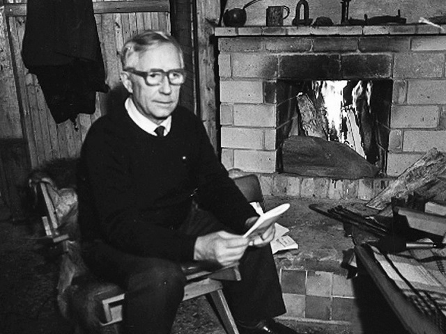
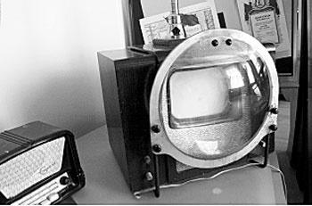
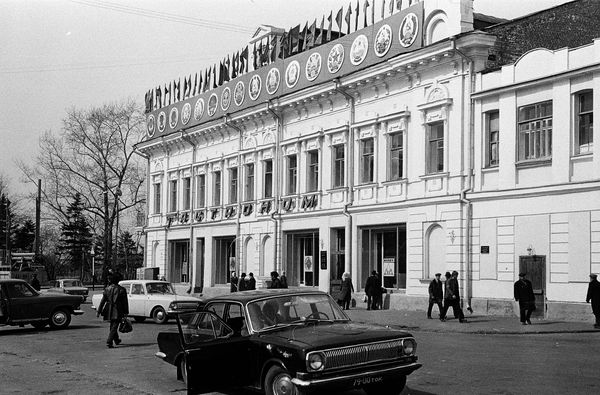

В настоящее время в Томске учатся 89 тыс. студентов.
Томск – старейший в Сибири Сибири научный, образовательный и инновационный центр,
где находятся не менее 15 научно-исследовательских организаций, 8 вузов, особая экономическая зона. В городе развиты наукоёмкий бизнес, IT-индустрия.



Интересные факты:
Площадь Томска примерно в 150 раз превышает площадь Монако.
Солнце в Томске светит 2048 часов в году.
Знаменитый писатель Александр Волков – уроженец Томска.
Томск стал четвертым городом в СССР, где появилось телевидение.
 Томск
Томск